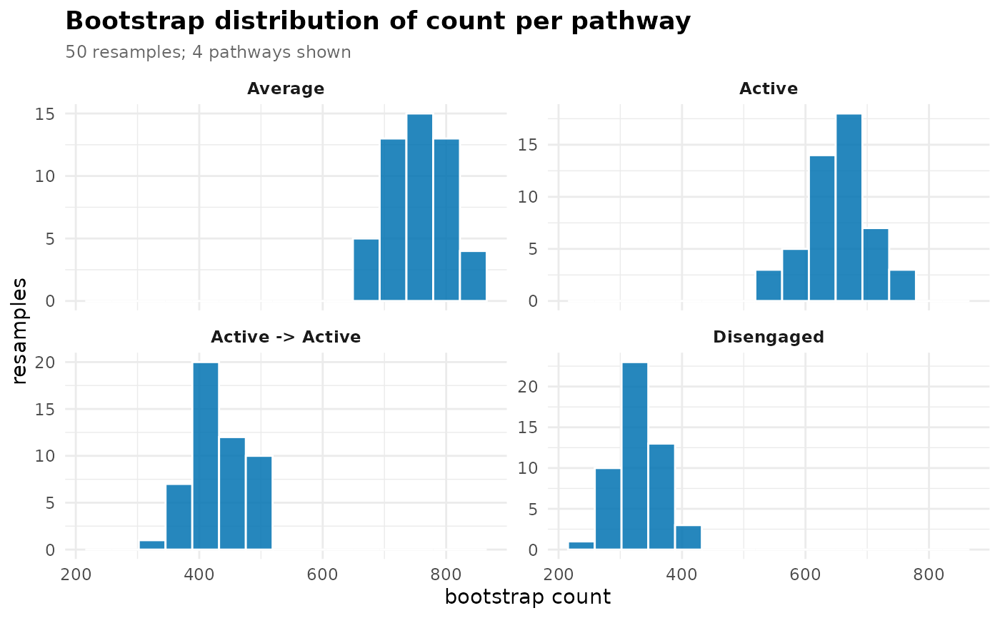

Plot the bootstrap distribution of pathway statistics
Source:R/bootstrap.R
plot_pathway_resamples.Rdplot_pathway_resamples() draws, for each selected pathway, a histogram
of one statistic across the bootstrap resamples. The spread of a histogram
shows how much the statistic depends on which sequences were sampled; a count
histogram with mass near zero marks a pathway that a different sample may not
contain.
Usage
plot_pathway_resamples(
x,
pathways = NULL,
stat = c("count", "next_probability", "divergence", "G2"),
top = 6L,
bins = 30L
)Arguments
- x
A
transitiontrees_bootstrapobject fitted withkeep_resamples = TRUE.- pathways
Pathways to show, in arrow notation. Default
NULL: the firsttoppathways of the summary table.- stat
"count"(default),"next_probability","divergence"or"G2".- top
Number of pathways when
pathwaysisNULL. Default 6.- bins
Number of histogram bins. Default 30.
Conditions
transitiontrees_bad_input(error)
xis not atransitiontrees_bootstrap; the resamples were not kept; a requested pathway is not in the bootstrap.
See also
bootstrap_pathways(),
as.data.frame.transitiontrees_bootstrap for the values.
Examples
boot <- bootstrap_pathways(context_tree(trajectories, max_depth = 2),
iter = 50)
plot_pathway_resamples(boot, stat = "count", top = 4, bins = 15)
